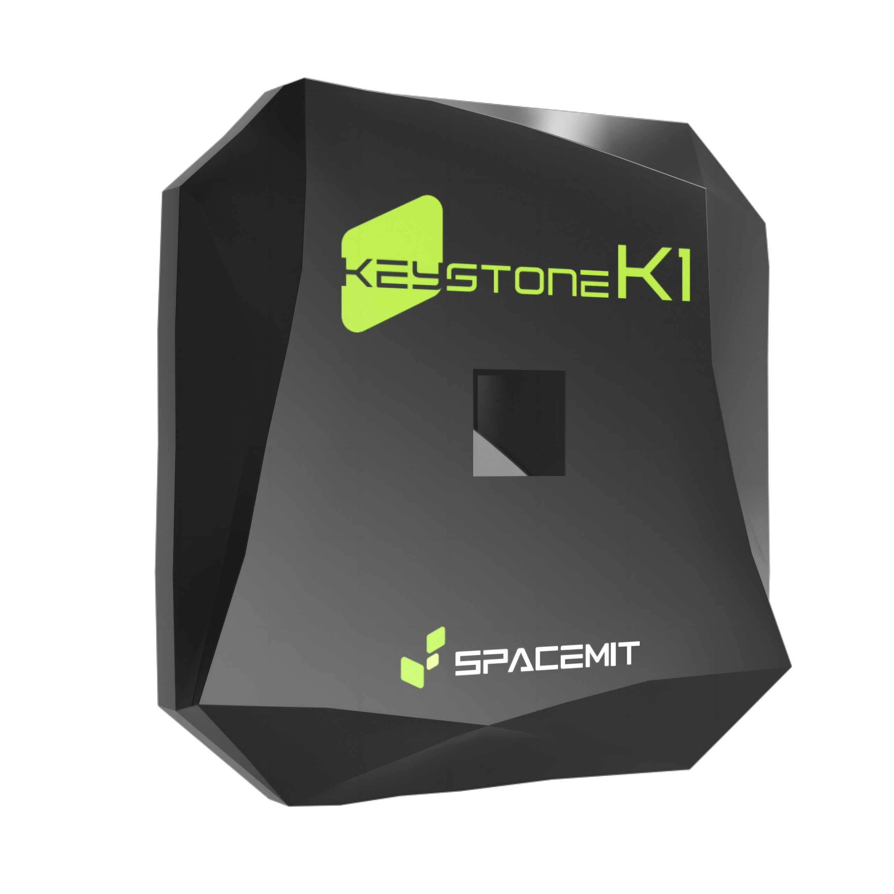

SLEEF Math Library Benchmark: Scalar vs. RISC-V Vector Performance
A detailed comparison of function execution times and speedup factors across Sleef Scalar, libm Reference, RVVM1 (LMUL=1), and RVVM2 (LMUL=2) implementations.
Highest Speedup (Double Precision)
4.74x (sqrt(x) with RVVM2)
Highest Speedup (Single Precision)
8.85x (sqrtf(x) with RVVM2)
Benchmark Environment
Fedora 42 Remix
Released by the Fedora-V Force team.
Download link: images.fedoravforce.org

K1 SoC (RISC-V)
Manufactured by SpacemiT.
CPU: 8 cores, model Spacemit® X60.
ISA Profile:
rv64imafdcv_zicbom_zicboz_zicntr_zicond_zicsr_zifencei_zihintpause_zihpm
zfh_zfhmin_zca_zcd_zba_zbb_zbc_zbs_zkt_zve32f_zve32x
zve64d_zve64f_zve64x_zvfh_zvfhmin_zvkt_sscofpmf_sstc
svinval_svnapot_svpbmt
MMU Mode: sv39.
SLEEF Version Under Test
Benchmarks were captured on commit 3993f71, merged into master on 22 Sep 2025.
Commit link: https://github.com/docularxu/sleef/commit/3993f713f29f5759ca237cf952e440664376cd0c
Benchmark Harness
Custom benchmark tooling lives on branch working.sleef.bench (repository link).
Build steps:
mkdir build
cd build
# Configure with RVV explicitly enabled
cmake -DSLEEF_BUILD_BENCH=ON \
-DSLEEF_BUILD_TESTS=OFF \
-DCMAKE_INSTALL_PREFIX=$HOME/.local \
-DSLEEF_ENABLE_RVVM1=ON \
-DSLEEF_ENABLE_RVVM2=ON \
-DCMAKE_C_FLAGS="-march=rv64gcv" \
-DCMAKE_CXX_FLAGS="-march=rv64gcv" \
..
# Build
cmake --build . -j --clean-first
Benchmark commands:
time ./bin/benchmark -i 100000000 -psz 10000000 --no-u35 --seed 12234456 time ./bin/benchmark_rvvm1 -i 1000 -s 1000000 time ./bin/benchmark_rvvm2 -i 1000 -s 1000000
Parameter reference:
-s: vector size (for scalar builds, this is the input pool size).-i: iteration count.-psz <pool_size>: sets scalar input pool size (default 1,000,000).--seed <value>: makes generated pools reproducible.--no-u35/--match-simd: disable u35 variants to mirror SIMD coverage.
Detailed Performance Overview
Double Precision Function Performance (ns/call or ns/element)
Comparison of execution times for double precision functions. Lower bars indicate better performance.
Single Precision Function Performance (ns/call or ns/element)
Comparison of execution times for single precision functions. Lower bars indicate better performance.
Speedup Comparison (Vector vs. Scalar)
Double Precision Speedup (vs. Sleef Scalar)
Speedup factors of RVVM1 and RVVM2 compared to the Sleef Scalar implementation for double precision functions. Higher bars indicate greater speedup.
Single Precision Speedup (vs. Sleef Scalar)
Speedup factors of RVVM1 and RVVM2 compared to the Sleef Scalar implementation for single precision functions. Higher bars indicate greater speedup.
Speedup Comparison (Vector vs. libm Reference)
Double Precision Speedup (vs. libm Reference)
Speedup factors of RVVM1 and RVVM2 compared to the libm reference implementation. This shows the vector gain over standard system libraries.
Single Precision Speedup (vs. libm Reference)
Speedup factors of RVVM1 and RVVM2 compared to the libm reference implementation. This shows the vector gain over standard system libraries.
RVVM2 Gain Over RVVM1 (LMUL=2 vs. LMUL=1)
RVVM2 Speedup vs. RVVM1 (Double Precision)
Speedup factor of RVVM2 using RVVM1 as the baseline. This highlights the performance benefit of increasing LMUL from 1 to 2.
RVVM2 Speedup vs. RVVM1 (Single Precision)
Speedup factor of RVVM2 using RVVM1 as the baseline. This highlights the performance benefit of increasing LMUL from 1 to 2.
Raw Data Table
This table consolidates the benchmark results for four implementations: Sleef Scalar (ns/call), libm Reference (ns/call), RVVM1 with LMUL=1 (ns/element), and RVVM2 with LMUL=2 (ns/element).
| Function | Precision | Sleef Scalar (ns/call) | libm Reference (ns/call) | RVVM1 (LMUL=1) (ns/element) | RVVM2 (LMUL=2) (ns/element) | Speedup (Scalar/RVVM1) | Speedup (Scalar/RVVM2) |
|---|